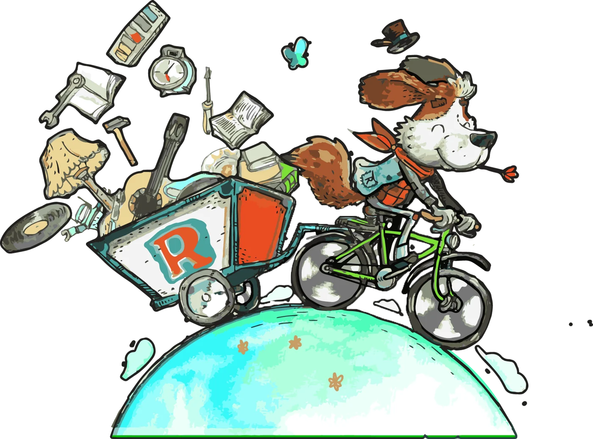

atelier et discussion
Vendredi 29 juillet
15h – 18h
Place Notre-Dame
gratuit
Atelier

Fini le gâchis : la solution est ici, dans notre ressourcerie associative au cœur de Lunéville.
Depuis avril 2016, Recyclune sauve chaque année des milliers d’objets de la destruction, dans un local de 600 m² au cœur de la zone des faïenceries.
Une ressourcerie, c’est aussi des rencontres, de la sensibilisation, des projets culturels, de la solidarité et des emplois locaux.
atelier et discussion
Vendredi 29 juillet
15h – 18h
Place Notre-Dame
gratuit
Atelier
atelier réparation
Samedi [date]
14h – 17h
Ressourcerie
gratuit
Atelier